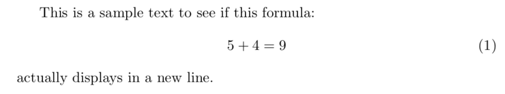

There are different things that you can do to write mathematical text, since LaTeX needs to know when a part of your text is mathematical, you have to tell him when to use a different typeset for maths notation, since uses a different typeset from normal text.
Therefore, special environments have been declared for this purpose. They can be distinguished into three categories depending on how they are presented:
I) Inline formulas
- Text formulas that are displayed inline, without creating a new line for the mathematical text.
II) Displayed
- Text formulas that are displayed in a line by themselves.
III) Displayed and numbered
- Text formulas that are displayed in a different line, the formula will be also autumatically numbered.
Now we are going to see the three different categories with some examples with LaTeX.
Type
Inline (within text) formulas
Displayed equations
Displayed and automatically numbered equations
Environment
math
displaymath
equation
LaTeX shorthand
\(...\)
\[...\]
TeX shorthand
$...$
$$...$$
Comment
equation* doesn't numerate the equations, but requires the package amsmath
Is suggested to avoid use $$...$$, as it may cause problems, particularly with the AMS-LaTeX macros. Instead is raccomended to use begin{equation}...end{equation} or begin{equation*}...end{equation*}.
I. Inline (within text) Formulas
When we write anything into LaTeX we use to say that we are in text mode, but when we want to write something like equations, we want to change 'mode', so we have to give laTeX the command to change it.
One possible way to 'change' this mode is to give the command \begin{math} ... \end{math} or $...$, where '...' stands for the formula.
One very simple example could be this:
LaTeX input
This is a sample text to see if this formula:
\begin{math}
5+4=9
\end{math}
actually stays within text.
Or we can also use $...$:
LaTeX input
This is a sample text to see if this formula: $ 5+4=9 $
actually stays within text.
We can also use the \(...\) macro:
LaTeX input
This is a sample text to see if this formula:
\(5+4=9\)
actually stays within text.
All the 3 macros will lead to the same PDF output, since the 3 macros work the same way, this is the PDF that you should get:
II. Displayed Equations
If we want that the Mathematical expression stands in a new line, we need to use the macros \begin{displaymath}...\end{displaymath}, $$...$$ or \begin{equation}...\end{equation} if we want to numerate the different equations.
By using these macros the result would be an equation written and centered in a new line, and most of the time it will be also bigger the font of the equation.
Here there are some examples:
LaTeX input
This is a sample text to see if this formula:
\begin{displaymath}
5+4=9
\end{displaymath}
actually displays in a new line.
We can also use $$...$$:
LaTeX input
This is a sample text to see if this formula:
$$ 5+4=9 $$
actually displays in a new line.
Or the macro \[...\] as well:
LaTeX input
This is a sample text to see if this formula:
\[5+4=9\]
actually displays in a new line.
We can actually see that all the three macros work the same way:
III. Displayed and numbered
If we have to write a document containing an elevate number of mathematical expressions, using the macros \begin{equation}...\end{equation}, will be absolutely the best choice, since numbering all the equation will be much easier to recall the expressions later on in the document.
LaTeX input
This is a sample text to see if this formula:
\begin{equation}
5+4=9
\end{equation}
actually displays in a new line and numbered itself.
If we have to write a document containing an elevate number of mathematical expressions, using the macros \begin{equation}...\end{equation}, will be absolutely the best choice, since numbering all the equation will be much easier to recall the expressions later on in the document.

IV. Test Yourself
This subsection is for revise everything you have learned in this section
Which macros would you use for an equation that stands in a different line? (3 possible solutions)